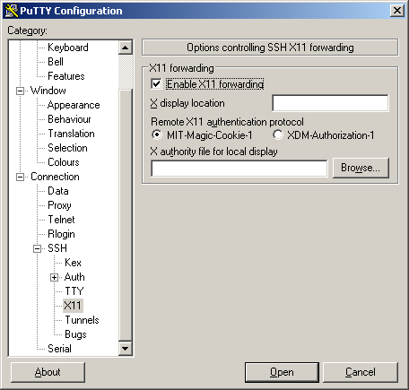

XWindow¶
Introduction to X¶
To view a graphical user interface (GUI) from one of HPC systems you will need to have a X Windows System (often shorten to just ‘X’) installed on your PC. UNIX based operating systems (Linux and Mac OS X) come with an X Window terminal called X11. For Windows based machines, you will need to install one.
Once you have a functioning X Server running on your PC, you will need to tunnel your graphics program from the HPC system to your PC.
Note: You may execute lite (i.e. not resource intensive) GUI programs on the login nodes of the HPC systems. However, these should be programs cannot be resource intensive. If you need to run programs such as MATLAB and you plan on doing computation through the MATLAB GUI, you will need to submit your job to the scheduler.
Launching X (GUI Programs)¶
Linux/OS X Instructions¶
With Linux or OS X you can simply run the command below from your terminal window to enable X11 forward through SSH.
$> ssh -XC username@hostname
To verify your X setup, you can run the command “xclock” from the terminal. If you have successfully tunneled your X traffic, you should see a small clock show up on your screen which you may now close. If you are not seeing a clock, please open a HelpDesk Ticket for further assistance.
Windows Instructions¶
Windows does not have a built in X11 Server so one will need to be installed. Below are instructions for Xming which is compatible with Putty but you maybe also which to look into MobaXterm.
Download Xming from here https://sourceforge.net/projects/xming/files/Xming/6.9.0.31/Xming-6-9-0-31-setup.exe/download.
Install and follow the on-screen instructions. If you do not already have Putty installed you will want to select “Full Installation” when you get to the “Select Components” screen.
At the end of the installation you can keep “Launch Xming” selected or launch Xming from your start menu.
When Xming is running, you will have a icon in your Windows systray that looks like an “X”.
Follow the Putty Instructions to setup connectivity but before you click “Open” be sure to set “Enable X11 forwarding” under the Category Option section. This will be under Connection, SSH, and X11. Example:
You should now be connected to an HPC system with X Forward enabled.
To verify your X setup, you can run the command “xclock” from the terminal. If you have successfully tunneled your X traffic, you should see a small clock show up on your screen which you may now close. If you are not seeing a clock, please open a HelpDesk Ticket for further assistance.
Running X (GUI Programs) on Computing Nodes¶
GUI intensive programs must be ran on a compute node. To accomplish this, one will need to follow the applicable above steps to first establish a X session to an HPC system. Once this has been accomplished you will need to run the following command which will launch an interactive job and give you terminal access on a compute node. Note: The following command is just an example and you will still need to set the appropriate pbs flags that meets the task’s needs.
$> qsub -q standby -X -I